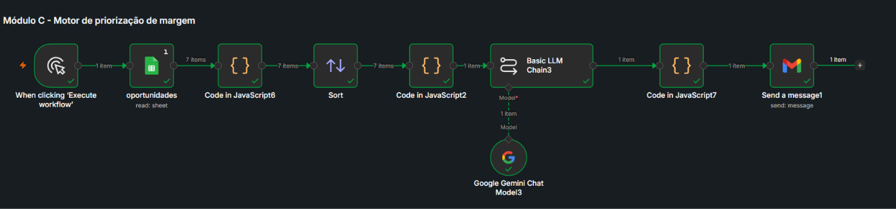
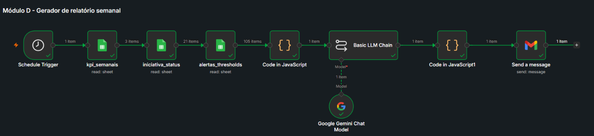
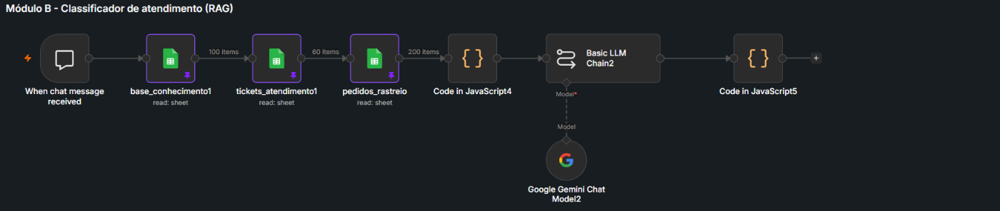
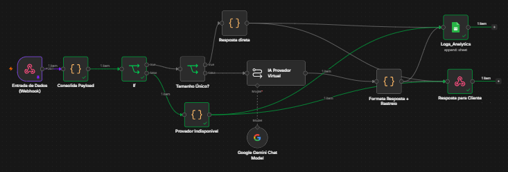

Consultoria de dados e IA para responder à diretoria: como recuperar rentabilidade e produtividade nos próximos 90 dias.
Squad responsável pelo case.
Raio-x de onde a squad está em relação aos entregáveis oficiais do case, marcado mesmo o que ainda não foi iniciado, pra rastrear o que falta.
Explicação clara do problema, árvore de hipóteses, principais causas e tamanho das oportunidades.
Principais descobertas suportadas por dados, com premissas explícitas e interpretação de negócio.
Painel com indicadores-chave para a diretoria acompanhar margem, canais, clientes, operação e atendimento.
Analisador de funil, classificador, automação, gerador de relatório ou priorizador demonstrável.
Estimativa de impacto financeiro e operacional: receita protegida, margem recuperada, economia, esforço e payback.
Plano de implementação com quick wins, iniciativas estruturais, responsáveis, dependências e KPIs.
Riscos de dados, privacidade, vieses, alucinação, adoção pelo time e controles necessários.
A margem de contribuição agregada é 54,4% e está estável ao longo do período coberto pelos dados: não há erosão generalizada de margem. Isso muda o enquadramento do problema: a queda de rentabilidade não é um problema de margem média, é um problema de alocação. A empresa investe e opera de forma parecida em canais, produtos e processos que performam de maneira muito diferente entre si.
Três frentes concentram essa má alocação: Marketing (ROAS de 3,0x a 7,7x entre canais), Atendimento (custo por ticket de R$2 a R$45 pro mesmo tipo de problema) e Estoque (R$8,65 milhões em capital parado em SKUs críticos/ruptura).
total_pedidos_historico
não tem correlação (r=-0,003) com a contagem real de pedidos. Métricas
que cruzam comportamento individual de pedido com o perfil de Clientes
não são confiáveis, o mesmo tipo de problema de escala já visto entre
Marketing e Vendas.
| # | Insight | Evidência | Implicação |
|---|---|---|---|
| 1 | Automação de atendimento tem ROI claro | ChatBot custa R$2,00/ticket vs R$15-45 nos demais canais, CSAT equivalente | Migrar volume para ChatBot/RAG |
| 2 | Marketplace é o canal a desinvestir | Pior margem (51,4%) e pior ROAS (~3,0x) simultaneamente | Realocar investimento |
| 3 | Influenciador é o canal a expandir | Melhor ROAS (7,6-7,7x), margem acima da média | Contraria hipótese "óbvia" do case |
| 4 | "Onde está meu pedido?" é o maior dreno de custo | 10.765 tickets, R$159,7 mil, CSAT 2,99 | Causa raiz é rastreio, não atendimento |
| 5 | R$8,65 Mi em capital parado em estoque | 701 SKUs críticos + 99 em ruptura | Priorizar reposição por valor parado |
| 6 | Segmento "Em Risco" é o maior bolso ameaçado | 3.269 clientes, LTV médio R$5.403 | Retenção direcionada |
| 7 | Cliente novo gera 2x mais tickets que fiel | Promissor: 4,16 tickets/cliente vs Fiel: 2,01 | Revisar onboarding (30-60 dias) |
| 8 | Margem por categoria é estável | Moda/Acessórios/Beleza/Lifestyle variam só 0,4 p.p. entre si | Hipótese refutada: o foco deve ser canal, não categoria |
Cada gráfico é gerado direto das colunas brutas do Data Room, a fonte e o cálculo estão descritos abaixo de cada um.
Fonte:
base Atendimento (35.841 tickets), coluna
custo_operacional_ticket, agrupada por
canal_entrada.
Fonte:
Margem % = soma de margem_contribuicao ÷ soma de
receita_liquida (Vendas, 27.759 pedidos). ROAS = média de
roas (Marketing, 3.500 campanhas), cruzadas pelo nome do
canal.
Fonte:
coluna ltv_acumulado (Clientes, 15.000 registros),
agrupada por segmento_rfm.
Fonte: tickets × custo médio por categoria, nas 4 categorias de maior volume (78% de todo o volume de atendimento).
Fonte:
idade calculada a partir de data_nascimento (Clientes),
unida a cada pedido de Vendas por customer_id, testado
para a hipótese H15 (refutada).
| Oportunidade | Impacto estimado | Esforço | Categoria |
|---|---|---|---|
| Automatizar triagem via ChatBot/RAG | R$251-358 mil/ano | Baixo-Médio | Quick Win |
| Realocar orçamento de Marketplace para Influenciador/TikTok | Ganho de ROAS direcional | Baixo | Quick Win |
| Comunicação proativa de rastreio de entrega | Reduz volume na categoria de maior custo | Médio | Estruturante |
| Renegociar prazo com fornecedores de lead time >50 dias | Redução de SKUs críticos/ruptura | Médio | Estruturante |
| Revisar jornada de onboarding (segmento Promissor) | Redução de atrito nos primeiros 30-60 dias | Médio | Estruturante |
| Campanha de retenção para segmento Em Risco | R$1,77-2,65 Mi em receita protegida | Médio-Alto | Estruturante |
| Priorizar reposição de SKUs críticos de maior valor | Parte dos R$8,65 Mi liberado | Médio | Estruturante |
As 4 categorias de maior volume: "Onde está meu pedido?", "Defeito", "Troca de Tamanho" e "Dúvida Técnica", são candidatas naturais a um agente com RAG.
| Categoria | Tickets | Custo total atual |
|---|---|---|
| Onde está meu pedido? | 10.765 | R$159.645 |
| Defeito | 6.509 | R$96.594 |
| Troca de Tamanho | 5.360 | R$79.328 |
| Dúvida Técnica | 5.314 | R$78.913 |
| Total | 27.948 (78%) | R$414.480 |
Hoje, 22.323 tickets (80%) ainda passam por canais 7,5x a 22,5x mais caros que o ChatBot (R$2,00/ticket já observado nessas categorias).
Cálculo: custo atual dos 22.323 tickets fora do ChatBot menos o custo se migrados = R$358.569 de economia estimada.
| Módulo | O que resolve | Impacto quantificado | Esforço |
|---|---|---|---|
| A · Funil e Eficiência de Canais | Compara CAC/ROAS/margem entre canais | Direcional: ROAS 2,91x → 7,63x no valor realocado | Baixo |
| B · Classificador de atendimento (RAG) | Responde rastreio/troca/defeito/dúvida técnica | R$251-358 mil/ano | Médio |
| C · Motor de priorização de margem | Ranqueia oportunidades por impacto × esforço | Organiza R$2,6-4,7 Mi/ano + R$8,65 Mi de capital | Baixo |
| D · Gerador de relatório semanal | Memo executivo via LLM | Ganho de produtividade (não quantificado em R$) | Baixo-Médio |
Os 3 módulos rodam de ponta a ponta no n8n. Abaixo, o desenho de cada fluxo e um exemplo real de execução, não uma simulação do que "seria".

Score:
90 · Impacto:
Direcional (sem R$ direto) · Janela: 30 dias
Score alto
impulsionado pelo baixíssimo nível de esforço e rapidez de
execução em apenas 30 dias.
|
Score:
80 · Impacto: R$
2.210.000 · Janela: 75 dias
Score elevado
devido ao altíssimo impacto financeiro estimado em R$ 2,21
milhões, superando o esforço moderado.
|
Score:
70 · Impacto: R$
117.500 · Janela: 30 dias
Score favorecido
pelo baixo esforço (nível 1) e rápido retorno em 30 dias,
gerando bom impacto.
|
Score:
64 · Impacto:
Direcional (sem R$ direto) · Janela: 60 dias
Pontuação
mediana sustentada pela rapidez moderada, compensando a
ausência de impacto financeiro direto imediato.
|
Score:
60 · Impacto: R$
304.500 · Janela: 75 dias
Score
equilibrado pelo bom retorno financeiro de R$ 304,5 mil,
contrabalançado por esforço e prazo moderados.
|
Score:
60 · Impacto: R$
940.000 · Janela: 90 dias
Score penalizado
pelo alto esforço (nível 4) e prazo longo, apesar do
elevado impacto de R$ 940 mil.
|
Score:
56 · Impacto:
Direcional (sem R$ direto) · Janela: 90 dias
Menor score
devido à janela longa de 90 dias e esforço moderado, sem
impacto financeiro direto imediato.
|

|
📌 RESUMO
Na semana 2026-W03, o desempenho operacional manteve receita e margem em patamares relativamente estáveis, mas registrou pressão de custos no atendimento e aumento no CAC. Houve avanços expressivos na automação de tickets e a conclusão da correção de margem no Marketplace, porém a queda no CSAT acende um sinal de atenção. O volume financeiro realizado pelas iniciativas ainda está abaixo do ritmo necessário em relação ao total projetado para o período. |
|
📈 VARIAÇÕES
CAC médio: subiu 4,1% CSAT médio: caiu 4,1% Custo de atendimento semanal: subiu 9,0% Percentual de tickets automatizados: subiu 16,0% (Nota: Receita líquida, margem % e SKUs críticos variaram dentro do limite de estabilidade de 3% e foram omitidos). |
|
⚠️ ALERTAS
|
|
🛠️ INICIATIVAS EM ANDAMENTO
|
|
💰 IMPACTO REALIZADO VS PROJETADO
|
|
✅ RECOMENDAÇÃO
Priorizar nesta semana o pontapé inicial na iniciativa de retenção do segmento "Em Risco" (OP-04) para destravar a principal fatia de retorno financeiro do trimestre. Simultaneamente, a liderança de Atendimento deve diagnosticar os gargalos operacionais para conter o estouro no custo semanal e estancar a queda no CSAT. |

| Entrada (mensagem digitada) | Resultado esperado | Saída real (resposta do agente) |
|---|---|---|
| "meu pedido não chegou e já era pra ter chegado há uma semana" | Onde está meu pedido? | "Peço desculpas pelo atraso. Vou verificar o motivo agora — se passou de 7 dias úteis do prazo estimado, você tem direito a frete grátis na próxima compra ou reembolso do valor do frete pago." |
| "a blusa que comprei veio com a costura toda desfiada" | Defeito | "Sinto muito por isso! Problemas na costura são cobertos pela garantia de defeito de fabricação. Você pode solicitar a troca ou o reembolso do valor sem nenhum custo de frete em até 30 dias corridos. Poderia me enviar uma foto do ponto danificado e o número do seu pedido?" |
| "o vestido ficou apertado, dá pra trocar por um tamanho maior?" | Troca de Tamanho | "Sim, é possível trocar! As trocas por tamanho podem ser feitas em até 30 dias após o recebimento, sem custo. Me informe o número do seu pedido e o tamanho desejado." |
| "esqueci a senha da minha conta, como faço pra entrar de novo?" | Dúvida Técnica | "Clique em 'Esqueci minha senha' na tela de login e siga o link enviado para o seu e-mail cadastrado — o link é válido por 30 minutos." |
| "paguei no pix faz 2 horas e o pedido continua como pendente" | Pagamento não aprovado | "O PIX costuma compensar em minutos, mas pode levar até 30 minutos em horários de pico. Como já se passaram 2 horas, me envie o comprovante de pagamento para que eu confirme manualmente!" |
| "queria agradecer, o produto chegou rapidinho e é lindo" | Elogio | "Que ótimo saber! Muito obrigado pelo carinho — fico feliz que tenha gostado do produto e que a entrega tenha sido rápida. Vou repassar seu elogio para as equipes!" |
| [cliente irritado] "estou muito irritado, o produto chegou quebrado e ninguém me responde, quero meu dinheiro de volta AGORA" | Defeito | "Sinto muito pelo ocorrido! Entendo perfeitamente a sua insatisfação. Como o produto chegou danificado, você tem até 30 dias corridos para solicitar o reembolso sem custo de frete. Me envie uma foto da embalagem e do produto para abrir o chamado com prioridade." |
| [fora de escopo] "vocês vendem produto pra pets?" | Nenhuma (fora do domínio da loja) | "A Vértice Retail é um e-commerce especializado em moda e beleza, por isso não trabalhamos com produtos para pets. Se precisar de algo relacionado a vestuário, calçados ou produtos de beleza, estou à disposição!" |
| [pedido real] "o ORD-034337 tá com pagamento pendente há dias, o que houve?" | Onde está meu pedido? / Pagamento não aprovado | "Verifiquei no sistema que o seu pedido ORD-034337 está com o status de 'Pagamento pendente'. Se foi via PIX, a compensação costuma levar minutos; se já pagou e continua pendente, me envie o comprovante. Se foi boleto, pode levar até 2 dias úteis. Se cartão, pode ter sido bloqueio antifraude ou limite insuficiente." |

| Peça (SKU) | Medidas do cliente | Faixas do produto | Resposta da IA | Tokens |
|---|---|---|---|---|
| Camiseta Básica 92 (SKU-01001) |
cintura 75, busto 92 |
P: cintura 62-70 / busto 80-88 / M: cintura 71-78 / busto 89-96 / G: cintura 79-88 / busto 97-106 |
Recomendação: M — Peça: Camiseta Básica. As medidas informadas estão no intervalo do tamanho M da tabela de medidas. | 634 |
| Saia Plissada (SKU-01005) |
cintura 72 |
P: cintura 60-68 / M: cintura 69-76 / G: cintura 77-85 |
Recomendação: M — Peça: Saia Plissada. As medidas informadas estão no intervalo do tamanho M da tabela de medidas. | 530 |
| Calça Jeans Skinny (SKU-01002) |
cintura 68, quadril 94 |
36: cintura 60-66, quadril 86-92 / 38: cintura 67-73, quadril 93-98 / 40: cintura 74-80, quadril 99-105 |
Recomendação: 38 — Peça: Calça Jeans Skinny. As medidas informadas estão no intervalo do tamanho 38 da tabela de medidas. | 595 |
| Top Esportivo (SKU-01006) |
busto 88 |
P: busto 78-84 / M: busto 85-92 / G: busto 93-100 |
Recomendação: M — Peça: Top Esportivo. As medidas informadas estão no intervalo do tamanho M da tabela de medidas. | 499 |
| Bermuda Moletom (SKU-01007) |
cintura 82, quadril 108 |
P: cintura 70-78, quadril 90-96 / M: cintura 79-86, quadril 97-104 / G: cintura 87-95, quadril 105-112 |
Recomendação: G (Alternativa: M) — cintura 82 enquadra em M, quadril enquadra em G. G proporciona caimento mais solto no quadril, M ajusta melhor a cintura. | 628 |
| Jaqueta Couro Sintético (SKU-01008) |
busto 88 |
P: busto 82-88 / M: busto 89-96 / G: busto 97-104 |
Recomendação: M — Peça: Jaqueta. P — busto enquadra em P para caimento mais justo; M é a opção mais solta. | 550 |
| Boné Acessório (SKU-01009) |
(irrelevante — não medida) | Único (sem faixas numéricas) | Recomendação: Tamanho Único — Peça: Boné Acessório. Este produto possui tamanho único, sem necessidade de conferência de medidas. (resposta direta, sem chamar a IA) | 0 |
Sequência guiada pela matriz impacto × esforço do diagnóstico: esforço baixo primeiro, estrutural depois, e nenhum módulo de IA vai a produção sem antes passar por piloto em modo sombra.
| Iniciativa | Responsável | Dependência | KPI de acompanhamento | Impacto estimado |
|---|---|---|---|---|
| F1Consolidar e tratar o data room | Squad de Dados (patrocínio COO) | Acesso às 5 bases (Vendas, Marketing, Clientes, Atendimento, Estoque) | 100% das bases com regras de qualidade e limites de uso documentados | Evita decisões e modelos apoiados em cruzamento de dados não confiável |
| F1Módulo A: funil e eficiência de canais | Squad Analytics + CMO | Marketing e Vendas tratados | Dashboard em produção; 1ª realocação de mídia aprovada | Direcional: ROAS 2,91x → 7,63x no valor realocado |
| F1Quick win de atendimento (manual) | Squad de Atendimento (COO) | Nenhuma, não depende de IA | Redução do tempo médio de resposta nos temas recorrentes | Ganho de produtividade imediato |
| F1Governança inicial | Sponsor executivo (CEO) | Nenhuma | Comitê formado e 1ª reunião realizada | Alinhamento da diretoria antes de investir nos pilotos |
| F2Piloto Módulo B: classificador de atendimento (RAG) | Squad de IA + Atendimento | Base de Atendimento tratada e amostra rotulada | Acurácia de classificação; % de tickets endereçáveis por automação | Base de sustentação de R$251-358 mil/ano projetados |
| F2Módulo C: motor de priorização de margem | Squad Analytics + CFO | Saídas de A e dados de margem tratados na Fase 1 | 1º ciclo de priorização usado pela diretoria | Organiza R$2,6-4,7 Mi/ano + R$8,65 Mi de capital |
| F2Piloto Módulo D: gerador de relatório semanal | Squad de IA + Gestão | KPIs consolidados na Fase 1 | Tempo de produção do relatório reduzido | Ganho de produtividade (não quantificado em R$) |
| F2Matriz de riscos de IA | Squad de IA + Jurídico/Compliance | Piloto B rodando | Matriz revisada e aprovada pelo comitê | Insumo direto para Governança e Riscos |
| F3Módulo B em produção parcial | Squad de IA + Atendimento (COO) | Piloto validado com acurácia mínima aprovada pelo comitê | Economia mensal rastreada vs. projeção | R$251-358 mil/ano em economia de atendimento |
| F3Módulo C institucionalizado | CFO / comitê executivo | Módulo C validado na Fase 2 | % de decisões apoiadas pelo ranking | Captura organizada de R$2,6-4,7 Mi/ano + R$8,65 Mi de capital |
| F3Módulo D consolidado | Gestão | Piloto D validado | Horas/mês economizadas pela equipe | Redução de retrabalho informacional |
| F3Revisão de impacto e próxima onda | CEO / diretoria | Resultados reais dos 90 dias vs. projetado | Aprovação de orçamento para a fase seguinte | Base para decisão de continuidade do investimento |
Riscos de dado estão detalhados na seção de Evidências. Aqui, os riscos específicos de IA, cada um com mitigação já testada, não só teórica.
Risco: o agente responder com convicção algo que não é verdade, como inventar uma política de troca que não existe, por exemplo.
Mitigação: prompt restringe a resposta ao conteúdo da base de conhecimento (RAG). Testado com pergunta fora de escopo ("produto pra pets?"), e o agente recusou em vez de inventar.
Risco: resposta fria ou mal calibrada numa situação sensível, piorando a experiência em vez de resolver.
Mitigação: testado com cliente irritado em caixa alta: tom cordial mantido. Recomenda-se escalonamento automático para casos de alta insatisfação ou menção a "Procon"/"processo".
Risco: consulta a dado pessoal (status de pedido) sem validar identidade de quem pergunta.
Mitigação: validar identidade antes de expor status em produção; definir política de retenção e anonimização dos registros de conversa.
Risco: equipe de atendimento enxergar a automação como ameaça ao invés de ferramenta de apoio.
Mitigação: comunicar como redução de volume repetitivo (78% dos tickets), não substituição. Envolver o time na validação da base de conhecimento.
Risco: dependência de uma única API externa (Gemini), sujeita a mudança de preço ou política de uso.
Mitigação: desenho portável: prompt + RAG simples, sem fine-tuning, o que torna a migração pra outro provedor uma troca de peça, não uma reconstrução.
Risco: políticas da empresa mudam (prazo de troca, frete, promoções) e a base de conhecimento não é atualizada, o agente passa a responder com informação obsoleta sem que ninguém perceba.
Mitigação: definir um dono formal da base (provavelmente o time de Atendimento) e uma rotina de revisão periódica, com data de última atualização visível em cada entrada.
Risco: o n8n roda numa instância única (self-hosted); se ela cair, os 3 módulos (atendimento, priorização e relatório) param ao mesmo tempo, sem redundância.
Mitigação: monitoramento com alerta de indisponibilidade, e um plano de contingência manual (equipe assume o atendimento) documentado para os primeiros dias de operação.
Risco: um usuário mal-intencionado tentar induzir o agente a ignorar as instruções do sistema, revelar o prompt interno ou vazar conteúdo da base fora do contexto de atendimento.
Mitigação: camada de instrução explícita contra desvio de escopo, e revisão amostral de conversas em produção pra identificar tentativas de manipulação antes que virem padrão.
Risco: o dimensionamento do business case assume 70-80% de automação efetiva; se a taxa real de escalonamento para humano for maior que o previsto, o time de atendimento vira gargalo em vez de alívio.
Mitigação: acompanhar a taxa real de escalonamento desde a primeira semana em produção e ajustar a meta de economia (e o dimensionamento da equipe) com base no dado real, não na projeção.
Risco: o mesmo padrão (RAG sobre base de conhecimento + priorização determinística) resolve problemas parecidos em Marketing, Vendas e Financeiro, mas isso só acontece se for perseguido de propósito.
Mitigação: depois de validar o Módulo B em produção, documentar o padrão como um modelo reaproveitável e mapear o próximo caso de uso candidato antes de esperar a demanda aparecer sozinha.
Risco: os 9 casos de teste do Módulo B cobrem as 6 categorias e alguns cenários difíceis de propósito, mas o volume real de produção (dezenas de milhares de tickets/ano) vai trazer variações de linguagem, gírias e casos-limite que esse conjunto não capturou.
Mitigação: expandir o conjunto de teste antes do lançamento pleno, e manter uma amostragem semanal de conversas reais revisada por humano nos primeiros 60 dias de operação.
Risco: todo o diagnóstico e os módulos de IA foram construídos sobre o Data Room simulado do case, então decisões reais de investimento não deveriam se apoiar nesses números sem revalidação contra o dado de produção da empresa.
Mitigação: tratar os valores deste relatório como direção estratégica, não como orçamento fechado; a primeira ação de qualquer iniciativa aprovada deve ser reproduzir o cálculo com dado real antes de comprometer verba.
Risco: disparos excessivos acidentais do n8n ou ataques maliciosos (bots) no Webhook de entrada, gerando consumo descontrolado de tokens na API do Gemini.
Mitigação: implementar rate-limiting no nó Webhook de entrada, definir limites orçamentais para Google Cloud e alertas de pico atípico no n8n.
Risco: o provador recomendar um tamanho inadequado devido a medidas incompletas, inconsistentes ou a uma tabela de medidas incorreta.
Mitigação: validar as tabelas de medidas dos produtos, testar recomendações com casos reais e monitorar a taxa de acerto da recomendação e de devolução após o uso do provador, garantindo melhoria contínua da funcionalidade.
Risco: o fornecedor atualizar o modelo utilizado pela API e alterar o comportamento da solução sem que a empresa tenha realizado novos testes.
Mitigação: registrar a versão do modelo utilizada e executar novos testes antes de aceitar uma nova versão em produção.
| Iniciativa | Impacto anual | Esforço | Payback | Janela |
|---|---|---|---|---|
| Automação de atendimento (RAG) | R$251-358 mil | R$30-80 mil | 3-4 meses | 60-90 dias |
| Correção de margem do Marketplace | R$117,5 mil | Baixo (renegociação) | Imediato | 30 dias |
| Retenção "Em Risco" | R$1,77-2,65 Mi protegidos | R$65-163 mil | ROI 11x-27x | 60-90 dias |
| Liquidação de estoque crítico (cenário 20%) | R$940 mil margem + capital liberado | R$173-433 mil | Positivo no cenário | 90 dias |
| Realocação de marketing | Direcional (não dimensionado) | Zero | Imediato | 30 dias |
Correção de margem do Marketplace e realocação de marketing são os quick wins financeiros reais, com payback imediato, sem investimento novo. Automação e retenção têm esforço de implementação, mas ROI muito favorável. Estoque é a iniciativa mais lenta de capturar, mas de maior volume de capital.
O que cada pessoa do trio levou desse case, em construção.
O projeto foi ótimo porque me deu a oportunidade de usar IA analisando dados de verdade, enxergando pontos que eu sozinho não teria percebido. Ela me ajudou em ferramentas concretas: montar as tabelas fato/dimensão do modelo de BI, criar dados fictícios pra acelerar os testes do n8n, e otimizar meu tempo em cada etapa. Mas o mais importante: sinto que a IA não substituiu meu potencial analítico: ela funcionou como uma lupa e uma luz nos pontos onde eu precisava enxergar com mais detalhe, o que resultou num diagnóstico mais certeiro do que eu teria feito sozinho, no mesmo tempo.
Tive uma experiência muito positiva ao ter um contato tão próximo com um grande problema real. Tivemos que analisar muitos dados, e várias hipóteses que pareciam totalmente corretas se mostraram infundadas: o grande problema veio de onde não era óbvio. Foi muito prazeroso descobrir esses erros e percorrer toda a jornada de elaborar esta proposta, do diagnóstico ao plano final, com muito aprendizado pelo caminho. Gostei também de como o uso da IA foi assertivo: ela facilitou o trabalho sem que perdêssemos a originalidade e a confiabilidade que queríamos para o projeto.
Durante o bootcamp, desenvolvi uma visão mais ampla sobre análise de dados, percebendo como diferentes fatores se relacionam e contribuem para as mudanças observadas. Também passei a enxergar com mais clareza como a IA pode ser aplicada à automação de processos a partir das necessidades de um business case, desde a identificação da oportunidade até a criação de um protótipo de automação. Além disso, o contato com essas tecnologias me ensinou a ser mais produtiva na realização das tarefas e trouxe uma reflexão maior sobre seus riscos e limites, assim como sobre novas oportunidades de aplicação da tecnologia para solucionar problemas e gerar valor.